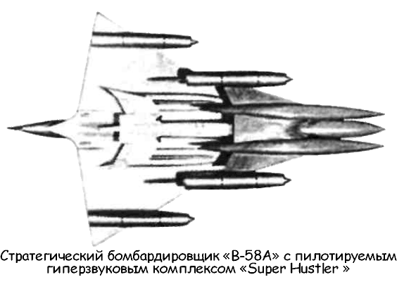

Проект «А-12» («BlackBird»)
Необходимость совершенствования летно-технических характеристик парка ВВС в равной степени касалась и самолетов-разведчиков.
Еще до начала космической эры в США активизировались работы по улучшению средств воздушной фоторазведки на основе богатого опыта, накопленного в ходе Второй мировой войны.
Хотя в июле 1955 года после встречи на высшем уровне Советский Союз проявил готовность пойти навстречу США в разработке мер доверия в советско-американских отношениях, сам процесс выработки этих мер оказался очень длительным. А американское руководство проявляло серьезную озабоченность тем, что не имеет необходимых данных о состоянии и тенденциях развития советского ракетно-ядерного арсенала В этой обстановке родился проект высотного разведывательного самолета «У-2» («U-2»), первый полет которого был осуществлен в августе 1956 года.
Президент Эйзенхауэр так пишет об этом в своих мемуарах:
«Разведывательная программа «U-2» появилась по необходимости.
В середине 1950-х годов США, будучи открытым обществом, оказались перед лицом закрытой Коммунистической империи, которая не отказалась от своих амбиций на завоевание мира, но которая теперь имела в своем распоряжении самолеты и управляемые ракеты, оснащенные ядерными зарядами, что увеличивало ее возможности нанести по США внезапный удар. Наше соотношение сил с Советами в области разведки было как нельзя более неблагоприятным.
Советы имели неограниченный доступ к такой информации, которой у нас практически не было. […] С учетом всего этого я одобрил рекомендации главы разведки использовать самолеты «U-2» над Советской территорией».
Регулярные полеты разведчиков «U-2» осуществлялись с американских авиабаз на территории Турции и Пакистана, а главными объектами воздушной разведки стали Капустин Яр и Тюратам, где шли испытания баллистических ракет, ядерный полигон под Семипалатинском, а также район Шаришаган в Средней Азии, где, по оценкам американских экспертов, велись работы над системой ПРО.
Отдавая себе отчет в том, что средства авиационной разведки могут оказаться уязвимыми для средств противовоздушной обороны (а уже 1 мая I960 года «U-2» под управлением летчика Фрэнсиса Пауэрса был сбит над территорией СССР), президент Эйзенхауэр и его ближайшее окружение искали пути создания новых, более совершенных технических средств, которые были бы способны обеспечить их достоверной разведывательной информацией, в первую очередь о Советском Союзе.
Поэтому еще до окончания испытаний «U-2» заместитель директора ЦРУ Ричард Биссел приступил к организации специальной группы, которой предстояло разработать техническое задание на перспективный самолет-разведчик.
В конце 1957 года Биссел попросил создателя «U-2» Кларенса Л. «Келли» Джонсона проанализировать вероятность поражения гипотетического самолета-разведчика, летящего на разных скоростях и высотах, огнем средств ПВО, прежде всего — зенитно-ракетными комплексами. Пожалуй, впервые в истории авиации разработчикам предлагалось оценить влияние снижения заметности самолета в электромагнитной области спектра на его уязвимость. Келли Джонсон со своей стороны подключил к проведению исследований лучших специалистов «Сканк уоркс».
Официально это подразделение именовалось «Advanced Development Company» («Компания перспективных разработок»), однако ныне оно известно под своим неофициальным названием «Сканк уоркс» («Skunk Works» — «Работы скунса»). Сверхсекретное подразделение было организовано на фирме «Локхид» в 1945 году специально под программу разработки реактивного истребителя «Икс-Пи-80» («ХР-80»).
Анализ, проведенный инженерами «Сканк уоркс», показал, что наилучшие шансы не быть сбитым ПВО будет иметь сверхвысотный и сверхскоростной самолет. За счет использования специальных материалов и выбора оптимальной формы планера оказалось возможным резко снизить эффективную отражающую поверхность разведчика. Результаты исследования произвели впечатление как и на самого Джонсона, так и на куратора из ЦРУ Дика Биссела. Биссел «пробил» на самом верху решение о начале работ по проектированию высотного скоростного малозаметного разведчика. Попробовать свои силы в разработке самолета на конкурсной основе было предложено фирме «Локхид» («Lockheed Aircraft Corporation») и фирме «Конвейр» («Convair», «Consolidated Vultee Aircraft Inc.»), которая в время была уже частью корпорации «Дженерал Дайнемикс» («General Dynamics Corp»). В обеих фирмах немедленно приступили к проектированию в надежде на будущее финансирование.
Первое время работы по разведчику велись на «Сканк уоркс» под шифром «U-3», но с 21 апреля 1958 года Джонсон ввел обозначение «А-11» («Archangel-11»).
«Я начал работать над первым проектом самолёта под шифром «Архангел», рассчитанным на крейсерскую скорость М = 3 с дальностью полета 4000 миль (6437 км) на высоте 90 000-95 000 футов (27 431-28 955 м)», — вспоминал Джонсон.
Проект «А-11» представлял собой самолет, по форме фюзеляжа напоминающий появившиеся позже сверхзвуковые пассажирские лайнеры «Ту-144» и «Конкорд». Аэроплан проектировался по схеме «бесхвостка» с треугольным крылом, задняя кромка которого имела обратную стреловидность, силовая установка — два прямоточных воздушно-реактивных двигателя в гондолах под крылом.
Параллельно инженеры «Сканк уоркс» работали над проектом «Гюсто-2» («Gusto 2») — околозвукового летающего крыла с крайне низкой отражающей поверхностью.
23 июля 1958 года Джонсон доложил о работах «Сканк уоркс» на «неформальном» заседании, в котором приняли участие как ведущие конструкторы авиационных фирм, так и представители военного и политического руководства США.
Помимо сверхзвукового разведчика «А-11» и околозвукового летающего крыла, конструкторы фирмы «Локхид» представили на рассмотрение новый вариант старого проекта «Си-Л-400» («CL-400 Suntan»). Этот проект задумывался как высотный сверхзвуковой разведчик с крейсерской скоростью в 2,5 Маха и расчетной дальностью полета около 4023 километров. Главной его особенностью была силовая установка с двигателями на жидком водороде.
Отчет «Сканк уоркс» военные восприняли благосклонно, однако представитель ВМС заметил, что флот видит перспективный разведчик как самолет на базе проекта «Gusto 2» с рабочим потолком в 46 километров; «затаскивать» аэроплан на такую высоту предполагалось при помощи аэростата, а разгонять до скоростей, на которых могут работать прямоточные воздушно-реактивные двигатели, должны были два ЖРД. Джонсон тут же прикинул размеры требуемого «надувного шарика» — получился баллон диаметром более мили.
За основу был взят «Архангел».
В августе 1958 года Джонсон провел консультации с представителями моторостроительных фирм относительно возможностей прямоточных двигателей. Одним из результатов тех консультаций стало перепроектирование «А-11» в новую машину — «А-12». Джонсон счел возможным пересмотреть и летные характеристики в сторону увеличения: скорость — 3,2 Маха, дальность — 6500 километров, потолок — от 29 до 33,5 километров! Профиль полета представлялся как серия гигантских скачков с шагом в 84 километра от более плотных слоев атмосферы в менее плотные — нечто подобное, как мы помним, предложил некогда профессор Зенгер в своем проекте космического бомбардировщика «антипода».
На совещании 22 сентября Джонсон пытался убедить власть предержащих в необходимости концентрации всех усилий на проекте «Архангел II», то есть «А-12». Расчетные данные «Архангела II» приводились следующие: максимальная взлетная масса — 61 тонна, практический потолок — 30,5 километра, дальность полета — 6500 километров.

Силовая установка включала два турбореактивных двигателя «J58» и два прямоточных двигателя диаметром 1,905 метра.
Дискуссию вызвал вопрос о размещении летчика. Существовало мнение, что на самолете необходимо использовать спасательную капсулу, подобную капсуле истребителя-бомбардировщика «F-111», однако Джонсон остановился на обычном катапультируемом кресле и использовании скафандра Скафандр пилота «А-12» практически аналогичен скафандру астронавта космического корабля «Джемини» («Gemini»).
Однако на том же заседании конструкторы «Конвейр» предъявили свой проект «Супер Хастлер» («Super Hustler»), выполненный на базе стратегического бомбардировщика «Б-58» («В-58 Hustler»).
Этот проект предусматривал возврат к схеме составного бомбардировочного комплекса, разработанной в фирме ранее.
В роли главного носителя («авиаматки») предполагалось использовать сам «В-58». На нем размещался самолет «Супер Хастлер», который представлял собой гиперзвуковую двухступенчатую систему массой 20,8 тонны (из них 11,3 тонны приходилось на топливо). Система включала двухместный пилотируемый планер с прямоточным и турбореактивным двигателями, а также беспилотный крылатый аппарат «Фиш» («Fish»), оснащенный двумя прямоточными двигателями фирмы «Марквард» («Marquardt») и вооруженный ядерной бомбой. Для возвращения «Фиш» оснащался двумя турбореактивными двигателями «Пратт энд Уитни» («Pratt amp; Whitney») «JT-12». Дальность полета системы оценивалась в 15 900 километров, причем «Супер Хастлер» развивал крейсерскую скорость до 6 Махов (!!!). Для выходных сопел двигателей и передних кромок крыльев использовался особый керамический материал, предохранявший от воздействия высокой температуры и снижавший радиолокационную «заметность» всей системы.
Рассматривался и вариант с двумя турбореактивными двигателями «J58», которые использовались для взлета, посадки и разгона, а на крейсерской скорости — убирались.
Полет при этом продолжался при помощи прямоточных двигателей.
В сентябре 1958 года наибольшее одобрение получил именно этот проект. Последнее слово оставалось за президентом.
В конце ноября состоялось решающее совещание о дальнейшей судьбе проектов разведчика. Результатом обсуждения состояния дел и перспектив программы стало «добро» президента Эйзенхауэра на государственное финансирование дальнейших работ по сверхзвуковым стратегическим разведчикам «Архангел II» и «Супер Хастлер» с измененной силовой установкой на основе двух турбореактивных двигателей «J58». Дабы раньше времени не привлекать к разработке внимание Конгресса, ассигнования выделялись из специального фонда ЦРУ.
В ходе дальнейших проектировочных работ оба самолета претерпели заметные метаморфозы. Сбрасываемый гиперзвуковой разведчик «фиш» превратился в пилотируемую разведывательную систему «Кингфиш» («Kingfish»).
«А-12», сохранив название, изменился внешне; кроме того, пришлось снизить практический потолок до 25 километров.
Время на строительство первого прототипа у обоих проектов, представленных на конкурс, не превышало 22 месяцев.
Окончательное решение о постройке прототипа и проведения летных испытаний (или «А-12», или «Кингфиш») Эйзенхауэр принял лично 20 июля 1959 года. Через месяц заказчики из Пентагона, ВМС и ЦРУ решали, какой самолет следует признать победителем конкурса 28 августа Келли Джонсон записал в своем дневнике:
«Сегодня разговаривал с руководителем программы. Он сказал, что мы получили заказ, «Конвейр» исчез с горизонта.
Базой для полномасштабного проектирования является А-12, методы работ и изготовления самолета полностью аналогичны использовавшимся при создании U-2. Беседа была сугубо приватной, нам выдвинули несколько условий: — мы должны снизить заметность в радиолокационной области спектра настолько, насколько возможно; — уровень секретности работ по возможности выше, чем при проектировании U-2; — предельная экономия финансов в связи с огромной стоимостью программы в целом.
Мы говорили о проблемах секретности, людских ресурсах, сугубо специальных авиационных проблемах, а вечером я пригласил девять человек, занятых в программе, на торжественный ужин».
И действительно предпочтение было отдано проекту «Локхид». Помимо лучших летно-технических характеристик и меньшей стоимости, тут сыграло роль и то, что предыдущий самолет «U-2», в отличие от «В-58», был создан вовремя и без превышения бюджета Кроме прочего, в ЦРУ были уверены в благонадежности кадров «Сканк Уоркс», что обеспечивало пресловутый «уровень секретности».
Официально фирма «Локхид» приступила к полномасштабному проектированию высотного скоростного и малозаметного самолета-разведчика 29 августа 1959 года. Всего через два дня, 31 августа, Джонсон распорядился строить макет скоростного разведчика и его модель в масштабе 1:8.
Фронт работ резко расширялся.
Проект «А-12» был выполнен по модифицированной схеме «бесхвостка» с крылом, плавно сопрягающимся с фюзеляжем, — позже такая схема получит название интегральной.
Треугольное среднерасположенное крыло с положительным углом стреловидности по передней кромке 60° и отрицательным в 10° по задней имело очень тонкий двояковыпуклый профиль. С внешней стороны гондол двигателей применена коническая крутка носка крыла. Характерный внешний вид самолету придают развитые боковые наплывы, занимающие до 40 % длины фюзеляжа, подобные боковые выступы сделаны и на внешних бортах гондол двигателей. Наплывы выполняют роль фиксированных передних поверхностей схемы «утка». Они оказывают благоприятное влияние на несущие свойства крыла, улучшают продольную и боковую устойчивость самолета, уменьшают изгибающий момент, действующий на носовую часть фюзеляжа.
Крыло многолонжеронной конструкции имеет кольцевые рамы для крепления гондол турбореактивных двигателей.
На задней кромке каждой плоскости имеется по два элевона с максимальными углами отклонения 12°. Других поверхностей управления или средств механизации не предусмотрено.
Хвостовое оперение состоит из двух цельноповоротных килей, смонтированных на гондолах двигателей и установленных под наклоном 15° к вертикали с завалом к продольной оси самолета. Максимальные углы отклонения килей 20°, возможно как совместное отклонение килей, так и индивидуальное.
Уменьшение отражающей поверхности наряду с достижением огромных скоростей и высот считалось одним из основных требований к самолету. На малозаметность «работали» удлиненные боковые профили фюзеляжа и гондол двигателей, плавное сопряжение гондол, крыла и фюзеляжа, боковые наплывы и отклоненные внутрь кили. В конструкции боковых наплывов, носков крыла, элевонов использовался радиопоглощающий сотовый наполнитель из пластика.
Черная краска, изготовленная на ферритовой основе, не только рассеивала тепло, частично отводя его с поверхности самолета, но и уменьшала радиолокационную заметность самолета. За характерную окраску самолет и получил свое про звище — «Blackbird» («Черная птица»).
В феврале 1960 года ЦРУ предложило фирме «Локхид» начать отбор летчиков для «А-12». Всего планировалось набрать 60 человек, в первый отряд — 24 пилота. Медицинские требования к кандидатам не уступали требованиям, предъявляемым к астронавтам, набираемым примерно в то же самое время по программе пилотируемого космического корабля «Меркурий».
Летчика № 1 Келли Джонсон выбрал лично. Им стал штатный испытатель фирмы Лу Шальк, с которым был заключен контракт на проведение первых 12 полетов.
Все пилоты, кроме «фирменных», были офицерами ВВС, но теперь им предложили оставить военную службу, поскольку ЦРУ считалось гражданским учреждением.
Сборку первого прототипа «А-12» закончили в середине февраля 1962 года, и в конце месяца на двух специальных трейлерах фюзеляж и отстыкованные плоскости крыла перевезли в испытательный центр Грум-Лейк. Расположенный в пустыне Сьерра-Невада испытательный центр Комиссии по атомной энергии Грум-Лейк (он. же — «Зона-51») хорошо знаком всем уфологам мира. По их мнению, именно здесь находятся обломки инопланетной «летающей тарелки», разбившейся 7 июля 1947 года вблизи Розуэлла. Якобы ученые «Зоны-51» изучают эти обломки и на их основе создают образцы перспективной авиационной техники. Более того, сами инопланетяне время от времени появляются в испытательном центре, дабы подсказать американским инженерам пути решения тех или иных технических проблем.
Не знаю, как там с инопланетянами, но работники фирмы «Локхид» давно были здесь желанными гостями: в «Зоне51» проводились испытания самолета-разведчика «U-2».
А теперь отсюда же должен был взлететь и «А-12».
Первый полет проходил 25 апреля 1962 года в обстановке максимально возможной секретности. Как только Лу Шальк оторвал «Архангела» от земли, начались сильные колебания по каналу тангажа.
По выражению испытателя, самолет буквально «барахтался в небе». Налицо была неустойчивость и склонность самолета к автоколебаниям. «А-12» раскачивался по всем трем осям так, что летчик уже не чаял благополучно приземлиться.
Тем не менее Шальку все же удалось посадить самолет, благо Грум-Лейк представляет собой высохшее озеро, на котором можно осуществлять прерванный взлет без особых проблем. В этом полете система повышения устойчивости не работала, а сам полет представлял собой скорее скоростную «рулёжку» с кратковременным отрывом машины от земли.
Полноценный полет состоялся на следующий день и продолжался 35 минут. Система повышения устойчивости исключила автоколебания по всем каналам управления. «Прекрасный взлет, прекрасная посадка», — отметил в своем дневнике Джонсон.
Третий, он же первый «официальный», полет «А-12» состоялся 30 апреля в присутствии представителей заказчика. Полет продолжался 59 минут, Лу Шальк забрался на высоту 9 километров и достиг скорости 550 км/ч. В послеполетном отчете летчик отметил удовлетворительную устойчивость и управляемость аэроплана В следующем полете, 4 мая, «Архангел» впервые вышел на сверхзвук, достигнув скорости 1,1 Маха. Джонсон ликовал, он даже посчитал возможным за счет ускорения программы летных испытаний нагнать отставание от графика, вызванное задержками в постройке прототипа. 26 мая на аэродром был доставлен второй «А-12». Правда, он предназначался для проведения наземных испытаний по определению эффективной отражающей поверхности.
Третий прототип собрали в августе, первый полет он совершил в ноябре. Четвертый «А-12» в двухместном тренировочном варианте доставили на базу в ноябре; пятый, одноместный, — в декабре. К двухместной машине быстро приклеилось прозвище «Титановый гусь».
В конце 1962 года в программе летных испытаний было задействовано два первых «Архангела». Самолеты достигали скорости 2,16 Маха и высоты 18 километров.
Карибский кризис и сбитие над Кубой разведчика «U-2» майора Андерсона резко подняли приоритетность программы «трехмахового» высотного разведчика. Только вот разведчик пока не был ни «трехмаховым», ни высотным. Проблемы с двигателем «J58» обострились до такой степени, что директор ЦРУ Джон Маккон направил на фирму «Пратт энд Уитни» разгневанное послание. Тем не менее первые десять летных двигателей появились в «Зоне-51» только в январе 1963 года. После этого штатные двигатели установили на все самолеты, кроме двухместного — он на протяжении всего срока эксплуатации летал с «J58».
Только теперь летчикам удалось поднять планку максимальной скорости до 2,5 Маха. При этом все испытатели отмечали возросшую сложность управления самолетом. 24 мая 1963 года в ходе рутинного околозвукового полета разбился третий прототип «А-12»; летчик-испытатель Кен Коллинз благополучно катапультировался. Причиной катастрофы стало обледенение канала приемника воздушного давления, из-за которого скоростемер давал неверные показания.
Пользуясь ошибочными данными о величине приборной скорости, Коллинз вывел самолет за установленные ограничения, после чего машина потеряла управление.
Заветных трех Махов удалось достигнуть 20 июля 1963 года, первым пролетел с тройной скоростью звука Лу Шалые. Однако до крейсерского полета на такой скорости речи пока не шло. Во втором полете за три Маха, состоявшемся в сентябре, Лу Шальк выдерживал скорость 3 Маха в течении трех минут. Это меньше, чем требовалось, однако в то время лететь три минуты на трех Махах не мог ни один турбореактивный самолет в мире, кроме «Архангела». Уже в ноябре летчикиспытатель Джим Истхэм разогнал первый прототип до 3,3 Маха, после чего слегка «замедлился» до 2,2 Маха и держал эту скорость в течение 15 минут. Наконец-то все заинтересованные лица смогли удостовериться: инженерам «Сканк Уоркс» удалось решить проблему длительного высокоскоростного полета С 14 сентября 1960 года параллельно с конструированием и летными испытаниями «А-12» велись работы по созданию бомбардировочной версии стратегического разведчика «РБ-12» («RB-12»). Бомбардировщик делали под бомбу с ядерным боезарядом от ракеты «Полярис». Внешне самолет не имел разительных отличий от разведчика, а бомбоотсек располагался в средней части фюзеляжа.
Проект «RB-12» был закрыт в пользу бомбардировщика «ХВ-70 Валькирия» — командование ВВС отказалось финансировать сразу две программы стратегических скоростных бомбардировщиков. 9 февраля 1964 года американские власти слегка приподняли занавес секретности над «А-12». В частности, президент Джонсон выступил с сообщением, в котором черным по белому было сказано следующее: «В США разработан перспективный экспериментальный реактивный самолет А-11, который в установившемся полете достигал скорости 2000 миль/ч и высоты 70 000 футов. Летные характеристики А-11 превосходят характеристики любого современного самолета… Несколько самолетов А-11 в настоящее время проходят летные испытания на базе Эдварде в Калифорнии. Самолеты А-11 проходят интенсивные летные испытания в целях изучение возможности использования этих самолетов в качестве истребителей-перехватчиков большого радиуса действия. При разработке коммерческого сверхзвукового самолета будет учтен опыт, полученный при создании А-11».
О существовании разведчика на базе скоростного самолета президент США сообщил 24 июля 1964 года, опять умолчав об обозначении «А-12», зато введя в оборот известный сегодня всему миру индекс «СР-71» («SR-71»)…
Тем временем программа летных испытаний «А-12» близилась к завершению. На смену летчикам-испытателям должны были прийти пилоты ЦРУ, для подготовки которых в Грум-Лейк сформировали специальную эскадрилью.
В июне 1964 года Лу Шальк сдал дела своему преемнику Биллу Перку. День 9 июля 1964 года стал для Перка днем огромного успеха и трагической неудачи. Перед ленчем летчик совершил впечатляющий демонстрационный полет по маршруту протяженностью 16 090 километров с дозаправкой в воздухе. Вечером им была предпринята попытка побить рекорд высоты. Перк поднялся на высоту в 29 километров (заметим в скобках, что расчеты фирмы «Локхид» показывали принципиальную возможность достижения высоты в 38,4 километра), однако на обратном пути самолет потерял управление, и летчику пришлось катапультироваться.